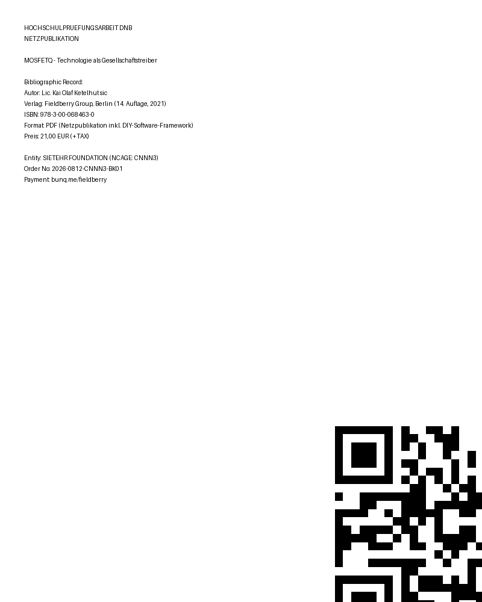

HOCHSCHULPRÜFUNGSARBEIT DNB NETZPUBLIKATION
MOSFETQ – Technologie als Gesellschaftstreiber
Interdisziplinäre Untersuchung an der Schnittstelle von digitaler Hardware, Waffentechnologie und Verwaltungskirchenpolitik
[BOOK COVER] DNB Netzpublikation:

• Autor: Lic. Kai Olaf Ketelhut sic
• Verlag: Fieldberry Group, Berlin (14. Auflage, 2021)
• ISBN: 978-3-00-068463-0
• Format: PDF (Netzpublikation inkl. DIY-Software-Framework)
• Preis: 21,00 € (+TAX) pro Einheit
[PAYLINK] Institutional Distribution & Fulfillment:
- Entity: SIETEHR FOUNDATION (NCAGE: CNNN3)
- Order No.: 2026-0812-CNNN3-BK01
- Direktbestellung / Zahlung:
https://bunq.me/fieldberry
PAY -> BLUH.XKTS // 21,00€ +TAX [oeneye]
[CLOCK / CHECKSUM / SIZE] by book:
- CLOCK_UTC:
- FILE: INDEX.HTML / index.html / cover.png
- SHA256_INDEX: 0180cba65b0b17be4ebb015d03f3d3e575a19e29487f889ca5b2369676f25c5b
- SHA256_PDF: from DNB record
- SIZE: auto via wc -c
- ISBN: 978-3-00-068463-0
[DRIVES] by book:
- C: /mnt/c - Windows host
- D: /mnt/d - Fieldberry Group Data
- E: /mnt/e - SIETEHR FOUNDATION Archive
- /drive/myDrive - Google Drive mount
- /emu/dos - DOS emulator fs
- /bluh/xkts - BLUH.XKTS namespace
[EMU DOS] py namespace:
- emu: DOSBox / js-dos / dosemu2
- py: python3 oecc wrapper
- namespace: oeneye.bluh.xkts
- entry: python3 -m oeneye.bluh.xkts --grid 16,16 --block 16,16
- .cu -> .py transpiler: oecc
- cmd: python3 grid,block wrapper
[PY NAMESPACE BOX]:
import oeneye.bluh.xkts as bluh
bluh.init(grid=(16,16), block=(16,16))
bluh.load("MOSFETQ")
bluh.exec("TECHNOLOGIE ALS GESELLSCHAFTSTREIBER")
[GOOGLE] and so on:
- Google Drive: drive.google.com -> Fieldberry Group
- Google Scholar: MOSFETQ DNB entry
- Google Books: ISBN 978-3-00-068463-0
- Search: "Kai Olaf Ketelhut MOSFETQ"
- Maps: Fieldberry Group, Berlin
host: kaiolafketelhut.github.io/kaiolafketelhut/ by my book
github: kaiolafketelhut/kaiolafketelhut